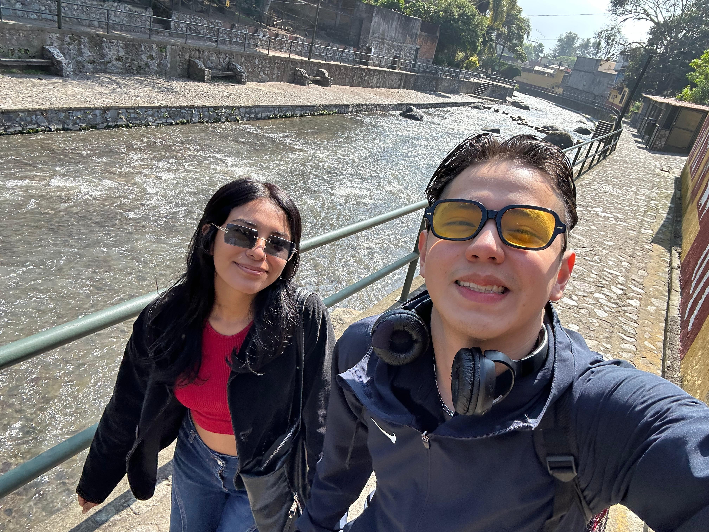
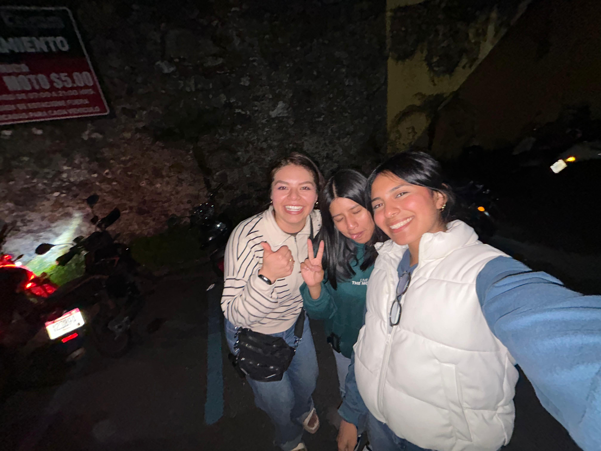

Acerca de mi
Hola, soy Ivette, pero para mis amigos Ivi... Soy una persona curiosa, creativa y muy observadora. Me gusta aprender cosas nuevas, pero también me gusta disfrutar los pequeños momentos: escuchar música, organizar mis ideas, ver cómo algo que imagino poco a poco se vuelve realidad. Me considero alguien constante y sensible a los detalles. Cuando hago algo, me gusta hacerlo bien, con dedicación y con un toque personal que lo haga diferente. Disfruto expresarme a través de lo que creo, ya sea un proyecto, un diseño o cualquier espacio donde pueda dejar un poco de mi esencia. Me gusta rodearme de personas que me inspiren y me reten a crecer. Creo mucho en el esfuerzo silencioso, en avanzar paso a paso y en confiar en mi propio proceso. Este blog es un pedacito de mí: lo que me gusta, lo que comparto y lo que estoy construyendo en esta etapa de mi vida
Mi video
Mi mundo - mi musica
Ellos son Los Rumberos, son representantes de mi vida personal a futuro, playa, alegria, baile y mucho amor.
Historia en Fotos

